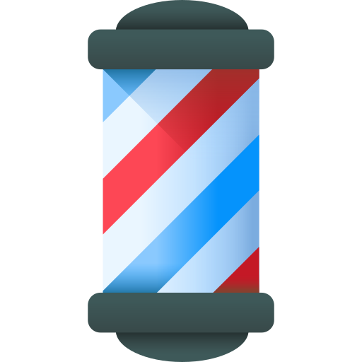
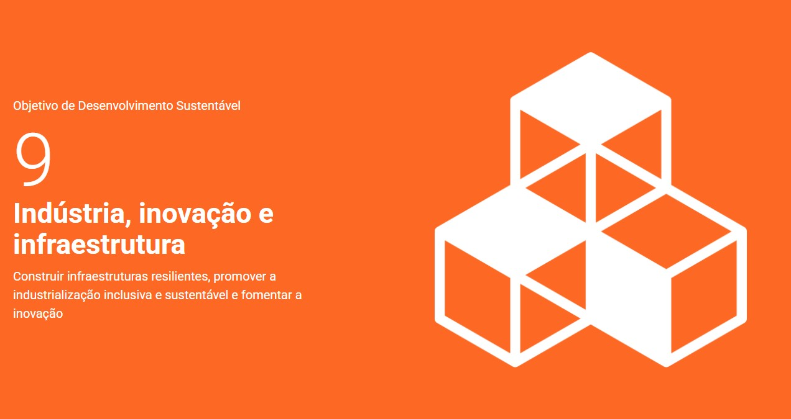

Contato
 Telefone: (43) 98843-4459
Telefone: (43) 98843-4459 Email: brunosouza.1998@alunos.utfpr.edu.br
Email: brunosouza.1998@alunos.utfpr.edu.br Linkedin: Meu Linkedin
Linkedin: Meu Linkedin GitHub: Meu GitHub
GitHub: Meu GitHub
Habilidades
 Inglês - Básico
Inglês - Básico Pacote Office - Intermediário
Pacote Office - Intermediário Gestão - Curso Livre
Gestão - Curso Livre
Barbeiro - Profissional
Resumo
Já atuei em diversas áreas (Varejo, Indústria, Comércio), com foco administrativo e RH. Atualmente, sou funcionário público estatutário, buscando transição para a área de tecnologia.
ODS que pretendo contribuir

Acredito que o desenvolvimento tecnológico e a modernização das indústrias são fundamentais para gerar oportunidades e melhorar a qualidade de vida das pessoas.
Experiência Profissional
Inspetor de Alunos | Prefeitura de Cornélio Procópio
04/2025 - Presente
Auxiliar Administrativo | Casa dos Parafusos
2024 - 2025
Formação
- Ensino Médio Completo | 2015
- Graduação em ADS - UTFPR-CP | Cursando